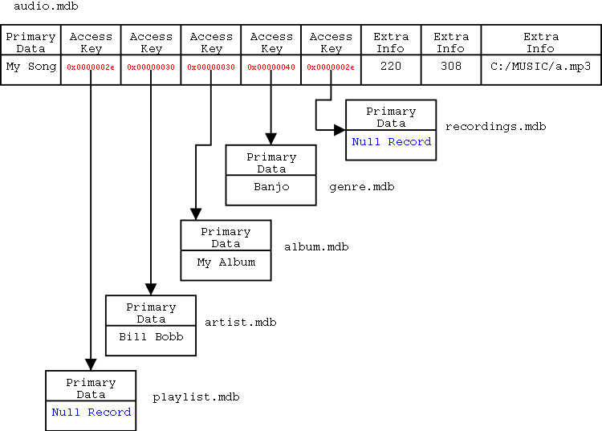

Working with the Database
The Neuros has several on-disk databases that are used by both the
device during normal operation and the host computer during
synchronization. The primary databases are:
- audio
- Audio files stored on the
Neuros
- pcaudio
- Audio files stored on the
host computer
- unidedhisi
- HiSi clips that
have not been identified yet. These clips should be fingerprinted
and looked up on the HiSi server during synchronization.
- idedhisi
- HiSi clips that have
been identified. If the fingerprint is successfully located on the
HiSi server, the database record corresponding to the clip should be
removed from unidedhisi and put into this database along with the
metadata returned from the server.
- failedhisi
- HiSi clips that
could not be identified. If the lookup fails, the record from the
HiSi clip should be moved from the unidedhisi database to this
database.
Each database can be thought as a collection of records with a fixed
number (greater than or equal to 1) of fields. The first field is the
primary field. Next are zero or more fields called access
keys, which are fields whose contents are indexed. All the
records that contain a particular value in an access key field can be
quickly looked up. (Example: finding all the songs with the genre
"Rock") Finally, the access keys are followed by zero or more
extra info fields. These fields contain data that does
not need to be indexed, like filenames or file sizes. Some fields may
also contain a collection of values, called a "bag". This is used in
the audio database to allow one file to be in multiple playlists at
once (i.e. have multiple values in its playlist field). Every
database is required to have a special null record.
Design
The database structure described above is implemented as a tree of
databases using a root database (audio, unidedhisi, etc.) with a child
database (artist, genre, etc.) for each access key. When a record is
added to the root, the actual contents of each access key field are
replaced with a pointer to the record in the child db containing the
value in its primary field. Of course, if the value doesn't already
exist in the child database, it must be added. Null values are
possible for access keys; just use a pointer to the null record in the
child database. The following diagram shows how this works:

File Layout
Each root database is stored in a directory whose name is the same as
the database name. Inside that directory are two files holding the
contents of the root database, a MDB file and a
SAI file. Child databases have a MDB and SAI file as
well as a PAI file used for reverse lookups. The name of
each of these files will be the name of the database with either a
".mdb", ".sai", or ".pai" extension. All the files for the root and
child databases are stored in the same directory. The file layout for
the audio database is:
audio/albums.mdb - Album child database
audio/albums.pai
audio/albums.sai
audio/artist.mdb - Artist child database
audio/artist.pai
audio/artist.sai
audio/audio.mdb - Root database
audio/audio.sai
audio/genre.mdb - Genre child database
audio/genre.pai
audio/genre.sai
audio/playlist.mdb - Playlist child database
audio/playlist.pai
audio/playlist.sai
audio/recordings.mdb - Recordings child database
audio/recordings.pai
audio/recordings.sai
Because of the nature of the DSP used in the Neuros, all database
files are treated as a sequence of 16-bit words. This creates some
packing issues that need to be considered when storing data in
database files. This is handled in the following way for the 5 major
types of data:
- Bit-fields
- Bit-fields are usually 16 bits and are stored
in big-endian byte order.
- Integers
- Integers are 16 or 32 bits and also stored in
big-endian byte order.
- Pointers
- Pointers are 32 bit integers that point to
offsets in a file, rather than memory locations. However, unlike
the pointers most programmers are used to, these pointers point at
16-bit words rather than bytes. So a pointer with value 0 refers to
bytes 0 and 1 in a file, and a pointer with value 22 refers to
bytes 44 and 45.
- Null-terminated strings
- These a similar to C-style strings.
First, the string is null-padded at the end to make it end on a word
boundary. Then it is terminated with a null word, 0x0000.
Example: "foo" (0x66,0x6f,0x6f) would be coded as 0x66,0x6f,0x6f,0x00,0x00,0x00.
Data of this type is refered to as sz in the tables.
- Display data
- This appears to be similar in use to a
string, but with the ability to include some sort of binary data.
For this reason, display data is made by again padding the string
(or whatever data) out to a word boundary with nulls, but then
prepending a word with the data length in words, excluding the
length word itself. Example: "foo" would be coded as 0x00,0x02,0x66,0x6f,0x6f,0x00.
Data of this type is refered to as dd in the tables.
File Formats
Standard Database Field Definitions
In the following sections, the fields for each of the standard
databases are defined. The following types are used to describe the
extra info fields:
- sz - Null-terminated string
- uint32 - Unsigned 32-bit integer
The primary field is always a null-terminated string, and the access
keys are 32 bit pointers to records in child databases which have only a
primary field (also a null-terminated string).
audio
| # | Name | Type | Description |
|---|
| 0 | Title | Primary | Title of track |
| 1 | Playlist | Access Key | Name of Playlist(s) containing this track |
| 2 | Artist | Access Key | |
| 3 | Album | Access Key | |
| 4 | Genre | Access Key | |
| 5 | Recordings | Access Key | Set to "FM Radio" if the track was
recorded from the radio and "Microphone" if it was recorded from the microphone. |
| 6 | Time | uint32 | Length of track in seconds |
| 7 | Size | uint32 | Size of track in kilobytes |
| 8 | Path | sz | Path to track on Neuros filesystem. Follows path conventions specified in the Overview. |
pcaudio
| # | Name | Type | Description |
|---|
| 0 | Title | Primary | Title of track |
| 1 | Playlist | Access Key | Name of Playlist(s) containing this track |
| 2 | Artist | Access Key | |
| 3 | Album | Access Key | |
| 4 | Genre | Access Key | |
| 5 | Recordings | Access Key | Set to "FM Radio" if the track was
recorded from the radio and "Microphone" if it was recorded from the microphone. |
| 6 | Time | uint32 | Length of track in seconds |
| 7 | Size | uint32 | Size of track in kilobytes |
| 8 | Path | sz | Path to track on host PC filesystem. |
unidedhisi
| # | Name | Type | Description |
|---|
| 0 | Title | Primary | Usually the name of the file |
| 1 | Source | sz | Source of track (Ex: "FM 100.7") |
| 2 | Path | sz | Path to track on Neuros filesystem. Follows path
conventions specified in the Overview. |
idedhisi
| # | Name | Type | Description |
|---|
| 0 | Title | Primary | Title of HiSi clip (not title of actual track) |
| 1 | Source | sz | Source of clip (see
unidedhisi) |
| 2 | Artist | sz | |
| 3 | Album | sz | |
| 4 | Genre | sz | |
| 5 | Track Name | sz | Title of actual track.
(Found during song identification) |
| 6 | Time | uint32 | Length of track in seconds |
| 7 | Size | uint32 | Size of track in kilobytes |
| 8 | Path | sz | Path to track on Neuros filesystem. Follows path
conventions specified in the Overview. |
failedhisi
Field definitions are the same as unidedhisi.
| # | Name | Type | Description |
|---|
| 0 | Title | Primary | |
| 1 | Source | sz | |
| 2 | Path | sz | |
Maintaining Database Consistency
Reading the database is fairly straightforward; the tricky part is
maintaining consistency between all of the parts of the database when
modifying it. Failure to do this correctly often leads to
unpredictable behavior in the Neuros, and sometimes even causes it to
freeze. The follow sections will explain these consistency conditions
for various common operations on the database. They assume you are
familiar with the format of the various database
files.
Adding a Record
To add a new record to a database:
- Locate pointers to all of the access keys by searching the
appropriate child database for each one. Note that empty access keys
should point at the null record in the associated child database.
- Any access keys that cannot be found need to be added to the
child databases (by recursively following these steps), and these
new pointers gathered.
- Using these pointers to the access keys, a new record needs to
be added to the MDB file.
- If this is a child database, a new module in the PAI file should
be created.
- A new SAI record should be created with pointers to the MDB
record created in step 3, and the PAI module in step 4.
(Remember the caveat about pointers to
PAI modules.)
- An entry to the MDB record created in step 3 needs to be added
to the PAI module associated with each access key in the child
databases. If there is no more room for an additional entry in a
PAI module, it may be necessary to extend
it.
Extending a PAI Module
Extending a PAI module makes it larger so that it can hold more
pointers to parent records:
- Move all of the modules after the module being extended down by
the size of the extension. Remember that the size of PAI module
must be a multiple of the minimum
module length.
- Fill in the extra space with zeros.
- All of the PAI pointers in the associated SAI file will be wrong
for modules that are located after this one in the PAI file. Update
them to reflect the new locations.
Deleting a Record
There are two ways to delete a record. It can be "marked" as
deleted, and it will be ignored by the Neuros (this is what the
firmware does when the user requests the a record to be delete):
- Set the "isDeleted" flag on the MDB record.
- Remove the entire SAI record associated with this record. This
must be done by moving the rest of the file up by the size of one
record.
- If this is a child database, clear the associated PAI module and
mark it as empty. The module does not actually have to be
removed.
- If this database has access keys, then the backlinking pointers
in each of the associated PAI modules in the child databases needs
to be removed. Removing a pointer from a PAI module requires it to
be erased by sliding all of the other entries in that module up.
(Not the whole file! The module itself should not change size. Put
zeros in the extra spot in the module this creates.)
- If an access key in a child database no longer has any entries
in its PAI module, that means it is no longer used by any records in
the parent database and should be deleted. Follow these same steps
again for it.
Complete deletion of a record is much more difficult. It is
identical to the above process, but also requires the MDB records and
PAI modules to be removed from their respective files. This will
invalidate many pointers in the whole database, so it is perhaps
easier to rebuild the database from scratch than to attempt to update
the contents of the database in place.